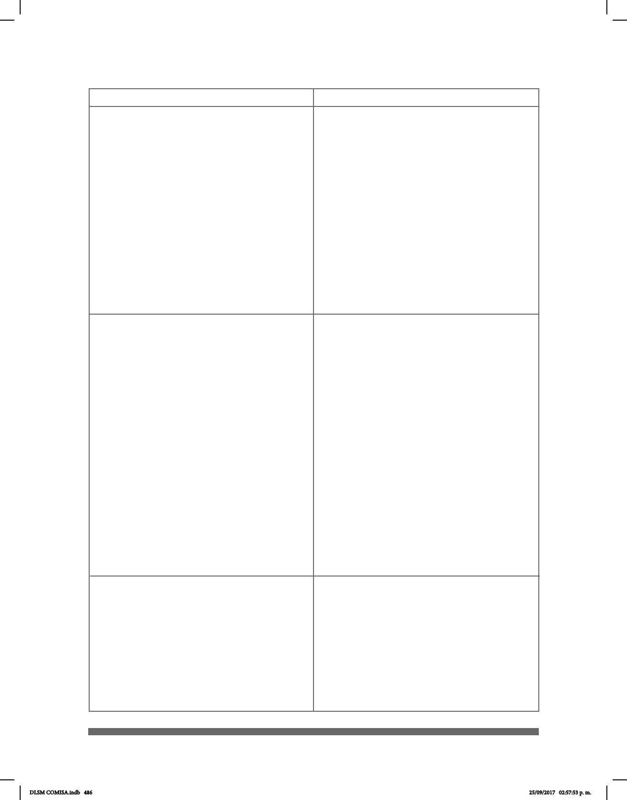

486
Subprograma Salud. Meta 2.
Política Pública 2.5. La Secretaría de Salud
(SEDESA) y Servicios de Salud Pública del
Distrito Federal (SSPDF), incluirán en los
programas anuales de capacitación para
servidores públicos, cursos relacionados con el
uso de tecnologías, de formatos accesibles, así
como de Lengua de Señas Mexicana. Sobre
todo para el personal de las áreas de atención
ciudadana y acceso a la información pública, a n
de hacer ecaz la comunicación.
Política Pública 2.6. La Secretaría de Salud
(SEDESA) y Servicios de Salud Pública del
Distrito Federal (SSPDF), contarán con personal
que conozca la Lengua de Señas Mexicana en
los hospitales y unidades médicas con mayor
auencia de pacientes.
Subprograma Educación.
Meta 2. Política Pública 2.4. La Secretaría
de Educación y el IEMS en coordinación con
INDEPEDI fomentarán la producción, la
distribución y difusión de materiales
audiovisuales interpretados en Lengua de
Señas Mexicana (LSM), para la atención
educativa de alumnos con deciencias auditivas.
Extendiendo la invitación a sumarse a esta
acción a los responsables de la Educación
Superior, como la Universidad Autónoma de la
Ciudad de México (UACM).
Política Pública 2.5. La Secretaría de
Educación y el IEMS impulsará que los maestros
conozcan la Lengua de Señas Mexicana (LSM)
con la nalidad de favorecer la educación para
personas con deciencias auditivas en escuelas
regulares.
Extendiendo la invitación a sumarse a esta
acción a los responsables de la Educación
Superior, como la Universidad Autónoma de la
Ciudad de México (UACM).
Subprograma Trabajo. Meta 2.
Política Pública 2.4. Las Delegaciones,
dependencias, órganos desconcentrados y
entidades de la Administración Pública del
Distrito Federal, INDEPEDI, impulsarán en
empresas y establecimientos privados el
diseño universal: accesibilidad física, Lengua de
Señas Mexicana, señalización, comunicación,
principios de ergonomía y seguridad para la inclusión
laboral de las Personas con Discapacidad.
Nacional
Local (CDMX)
DLSM COMISA.indb 486 25/09/2017 02:57:53 p. m.